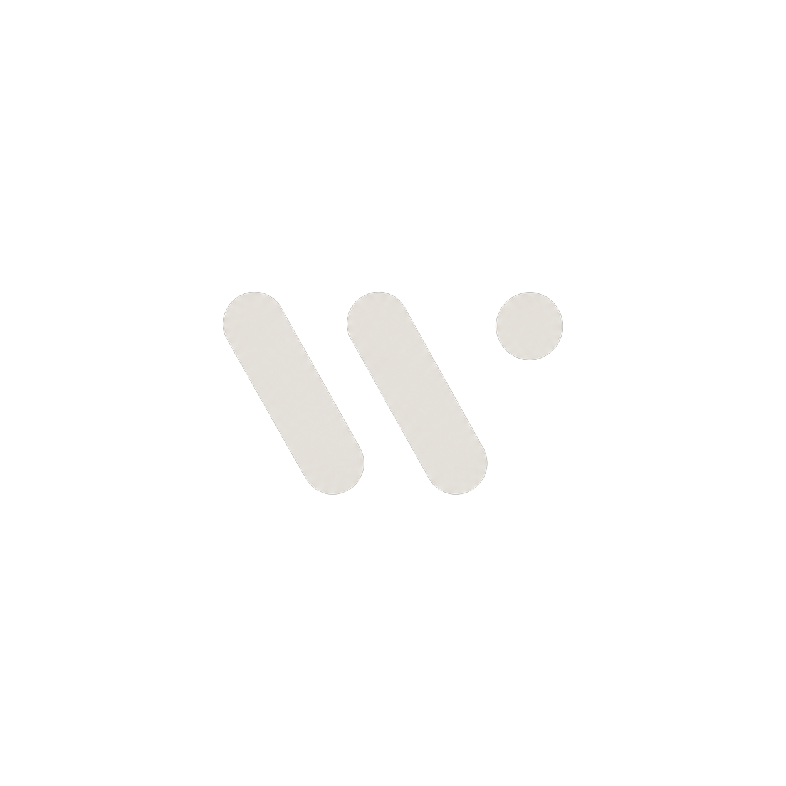

OCR för handskrift
Omvandlar fotograferade elevsvar till strukturerad LaTeX och text.

WiseOS läser handskrivna elevsvar, verifierar matematiken, tillämpar lärardefinierade rättningsregler och genererar tydlig pedagogisk feedback.
Handskrivet eller digitalt inskick.
Bild → LaTeX och text.
Kontroll av matematisk ekvivalens.
Delpoäng och enhetshantering.
Korta, pedagogiska anteckningar.
Mänsklig granskning när den behövs.
Omvandlar fotograferade elevsvar till strukturerad LaTeX och text.
Kontrollerar ekvivalens mot det rätta svaret, inte bara textmatchning.
Tillämpar lärarens egna regler för delpoäng, enheter och avrundning.
Genererar tydliga, pedagogiska förklaringar för varje resultat.
Osäkra inlämningsuppgifter skickas till läraren för godkännande.
Uppgifter, inlämningar och klassöversikt på ett ställe.
Så går det till när WiseOS tar hand om ett elevsvar. Inga riktiga elever, bara syntetisk demo-data.
Ett foto av elevens arbete.
Bilden tolkas som strukturerad LaTeX och text.
x^2 - 4x + 3 = 0
Lösningen är ekvivalent med det rätta svaret.
Lärarens regler tillämpas konsekvent.
Förklaringar anpassade för elevens nivå.
Människa i loopen när det behövs.
Säkerhetsnivåer, batch-körningar, villkorsstyrd automatisering och lärarens granskningsvy är reserverade för auktoriserade användare.